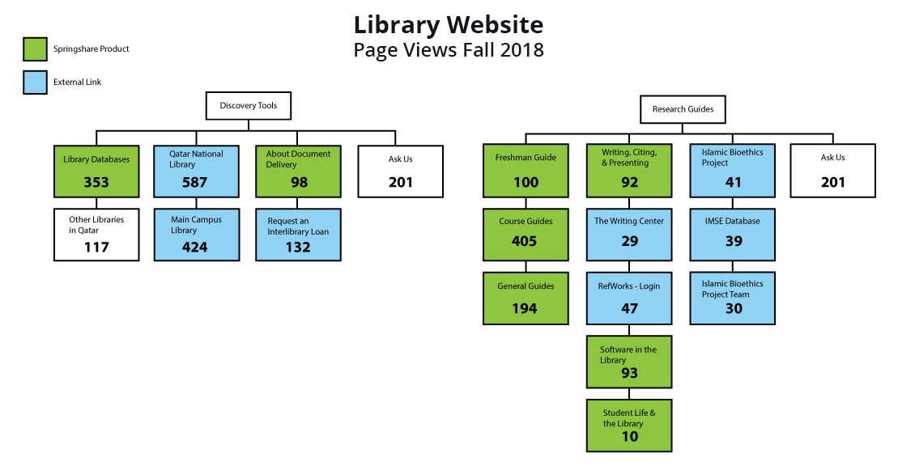

Library Website
Redevelopment Project
Project Details
- Project Dates: Spring 2019, Launch: July 8, 2019
- Core Project Team: 3 Library Staff members
-
Key Stakeholders:
- library administration
- faculty
- students
- local community
Challenges
-
Balancing different stakeholder priorities
- Communications department
- library staff
- Library and University IT departments
- Managing all major communication and technical aspects of the project
Project Context
Existing Library Website before Project in 2018

New Georgetown University in Qatar Website 2019

Requirements & Scope
- Align the library website to the main GU-Q website
- Re-organize/re-evaluate site content based on:
- User feedback
- Analytics
- Refresh the visual content
- Implement accessibility standards
- Library website only (not libGuides, marketing materials, signage)
General Approach
- Well-Rounded Project Team
-
Detailed Project Plan
- requirements, scope, and responsibilities
- project stages
- deadlines
- Organized supporting documents
- Ongoing team communication, check-ins, and stakeholder updates
Project Execution
- Information Collection
- User Research
- Information Architecture
- UX Design (Tools: Adobe XD, Photoshop, Illustrator)
- Development
- Testing
- Deployment
Example - Information Collection
Example - User Research

Example - UX Design

Example - UX Design

Example - Development
Directions
Directions & Parking
The Georgetown University in Qatar Library...
The library welcomes all visitors...
Example - Deployment

Example - Deployment

What lessons did you learn while completing the project?
- Active & meaningful participation of team members
- Clear understanding of roles and responsibilities
- Management support to execute the project plan
- Clearly defined project goals, scope, & requirements
- Be flexible - with time, people, and some deadlines
How do you feel about the outcome?
Positive outcome - was able to complete project on time and was well-received by stakeholders and users